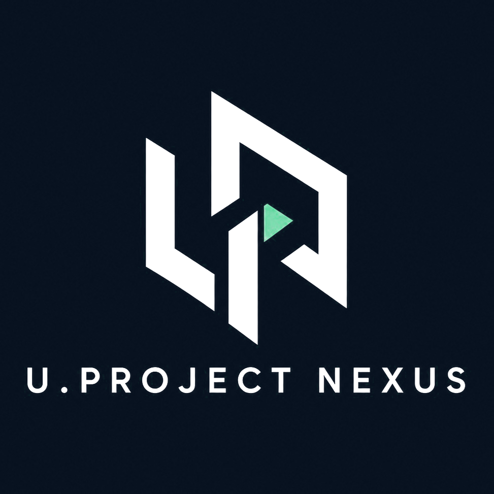
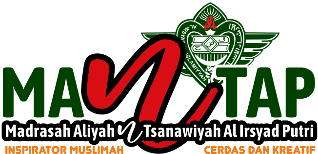

AI Integration
Integrasi model AI ke aplikasi, knowledge workflow, dan pengalaman pengguna.
U.Project Nexus adalah studio integrasi AI dan otomasi yang merancang sistem digital untuk pendidikan, data, dan alur kerja institusional.

Kami tidak sekadar membangun teknologi. Setiap sistem dirancang untuk mengubah kapabilitas AI menjadi alur kerja institusional yang terstruktur, presisi, dan berdampak nyata.
Integrasi model AI ke aplikasi, knowledge workflow, dan pengalaman pengguna.
Data terstruktur, monitoring, analitik, dan fondasi evidence untuk keputusan.
Otomasi dokumen, komunikasi, assessment, dan alur kerja berulang.
Arsitektur, API integration, deployment, dan sistem yang terus berkembang.
Learning Intelligence Platform
RoboMANTAP-Intelligence dikembangkan untuk mendukung pembelajaran, asesmen, pembinaan, monitoring, dan otomasi guru dalam lingkungan pendidikan.

Salah satu pijakan awal U.Project Nexus di bidang pendidikan: membangun dari kebutuhan nyata, mengimplementasikan, mengamati penggunaan, lalu mengembangkan berdasarkan feedback.
RoboMANTAP dikembangkan dan diuji coba secara langsung bersama Madrasah Aliyah dan Tsanawiyah Al-Irsyad Al-Islamiyyah Putri Bondowoso (Sekolah MANTAP) sebagai lingkungan validasi awal untuk mengukur efisiensi alur kerja guru, analitik kognitif real-time, dan keandalan sistem UPN-CBT-Intelligence
UPN bergerak dari kebutuhan nyata menuju sistem yang dapat digunakan, diukur, dan dikembangkan.
Setiap sistem dirancang agar kecerdasan terhubung dengan proses dan kebutuhan nyata.
Diskusikan kebutuhan institusi, AI integration, data intelligence, atau automation Anda.